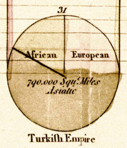
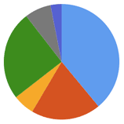
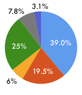
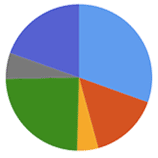
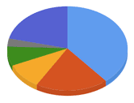
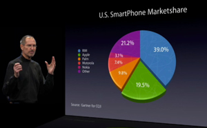
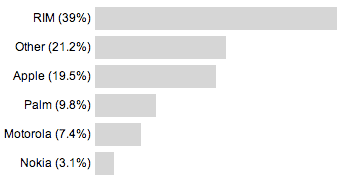
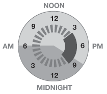

The invention, or as much as a concept can be invented versus a discovery, of the pie chart is attributed to the Scottish polyglot, William Playfair. He created or popularized many of the graphical visualizations we use today. His book Commercial and Political Atlas and Statistical Breviary, published in 1801, is cited at the first use of a pie chart. (Note the use of the Long-s in Turkish and unusual abbreviation in Square Miles in his example.)
In those early days, experimentation of better ways to visualize complex data and convey meaning was common. Two hundred years on, we’re still using many of these same tools, except for the fact that we now recognize many of their failures, yet continue to use them in an attempt to tell a story. Complex visualizations evolve with usage, cultural standards and the data being processed. We have to be willing to admit the failures of some types of graphs and use new formats which are more apt for the medium. Pie charts are one such visualization that should be retired, with the exception of a very few instances, there is no need in this day and age to use to ever create a pie chart.
The original idea behind a pie chart is that it represents parts of a whole, each sliver or wedge is a section, when totaled gives you the overall picture. Over the years pie charts have morphed purely into eye-candy, exemplified by their sister graph the doughnut chart, which offers zero additional information.
If we look at a few examples, you will quickly see the failings in the circular design along with how easy it can be used to misrepresent data.
In this example, let’s take a look at the three smallest slivers. Can you name the percentages? Which one is the largest of the three? By not putting the slivers next to each other it becomes more difficult to compare. Can you give me the actual values of any sliver on this pie chart?
To make this pie chart usable we need to “improve” it by adding labels. This is necessary so we can comprehend the value of each sliver, but at this point you need to be asking yourself, what’s the point of the pie chart, shouldn’t this just be a table? It isn’t as catchy on the eyes, but the ink-data ratio is much higher as a table than a pie chart. Once we create the labels for the values, the slivers become redundant.
This isn’t the only problem, because we need to reference each sliver uniquely, there needs to be a different color for each. This has several drawbacks, the more data points, the more colors needed, to the extent that you will end-up with shades of the same color, which creates potential confusion. Another less considered aspect of multiple colors is that a percentage of your audience will be color blind. They could confuse the different hues which does anything but adding clarity.
Our most common circular interface is the clock. We understand the 12 distinct units of the clock face and how their relative angles convert to percentages. A line at the 12 o’clock position and a line at the 3 o’clock position is one-quarter of an hour. Did you notice that on the previous pie chart one of the slivers was 25%? Would you have guessed that from it’s orientation? What if we re-arrange the order of the slivers to make the 25% more prominent.
Now you can easily spot the section that is 25%. The lines appear at the 9 o’clock and 6 o’clock positions. It is a rarity that all your values will equate to percentages divisible by clock-units. A pie chat has many factors going against it for instance: clarity, positioning, colors, count and values of your data points, but the fun doesn’t stop there!
We can take a look at the most recent of adaptations to the pie chart, the 3D pie chart. With the advent of computer graphing systems, has the 3D pie chart reared its ugly head. This is pure eye-candy at best and a blatant attempt to deceive at worst.
If we look at another pie chat in its handy 3D form, you’ll first notice it is squashed to look like it is coming at you. To make things look 3D on a 2D plane, you need to distort the image to give it the illusion of depth. In doing so, you are making a variable scale, the length around the sides compared to the front and back are different, so it becomes impossible to compare apples-to-apples.
Now, you might be thinking that this is just some sort of crazy observation and no one would attempt to pass this off with real data. The Guardian called out Steve Jobs for doing just this in their article, Lies, Damn Lies and Steve Jobs keynotes. In it, they used this wonderful image to illustrate the point.
How is it possible that the 19.5% takes-up more area than the 21.2%? Our mind is focusing less on the values and more on the size and bright colors. This is not conveying meaning, but distorting the truth. There are plenty more issues with his presentation that The Guardian tackles and it is an excellent look into how easy it can be to misrepresent the truth with statistics.
If pie charts are so bad, what are the options besides boring tabular data? If we take the values from our original pie chart and put it into a bar chart, another of William Playfair’s inventions, we would get this representation.
There are many factors here which out-weight the pie chart’s. Firstly, you don’t need as many colors, a single color will do. This is important for non-screen related displays. Color becomes expensive to print and the more colors, the more difficult the process becomes.
I’ve removed the grid lines and scale, increasing the ink-data ratio even further and reordered the bars from largest to smallest to make it easy to compare values. If you rearranged slivers in a pie chart in order you are still trying to estimate the outer circumference arcs to determine similarities rather than the width of the bar.
All of these graphs were made using the Google Charts API, which demonstrates that a company dominated by engineers can still make some of the most basic visualization mistakes, and if they can, anyone can, so be on the look-out for poor visualizations and know when to avoid them yourself.
Circular Visualizations
There is a subtle difference between pie charts and visualization in similar circular form. A pie chart only conveys one degree of freedom, each sliver can only represent one piece of data, the value, nothing more. In a visualization, it is possible to extract multiple degrees of freedom of data from a single visual representation. A simple example could be a combination of size and color. The larger the sliver the greater the value, the darker the hue the more or less “active”. That would be two degrees of freedom, value and “activeness”.
This is a real-world example I have recreated. It is from an IKEA sign attempting to convey information about store hours and activity. After careful investigation, it confuses more than it explains.
They are attempting to go with the clock metaphor, which is a good first start, but they’ve done it very poorly. It is difficult to distinguish what is noon, what is 6am and 6pm. At a glance it doesn’t immediately make sense or is very memorable. Can you tell me when the store opens?
The next major issue is defining “volume”. The pink is high volume, but what does that actually mean and is that high volume on sunday the same high volume on saturday? How can it jump from low volume immediately to high volume? A better way to define volume would be to explain this in terms of wait time. High volume might mean a 20-30 minute wait in the check-out line. Mild volume, 10-20 minutes and low volume less than 10 minutes. Then it would be easier to determine what “high volume” at 3pm means on each day.
Another possible fix to remove ambiguity is to convert this from a circular visualization to linear.
By making it linear you have a start and end point which removes the ambiguity about when the store opens. Although, I’m not even sure, I am assuming it’s 9am. Another simple change would by to replace the number “12” with the word “noon”. After that, it becomes clear what is AM and what is PM. The legend and color coding still needs work regarding the definition of volume being localize to each day, to each week or to IKEA as a whole. I think converting the nebulous “high volume” into wait times would give a more concrete definition, but this might mean people change their shopping habits and this visualization becomes obsolete.
Any pie chart can easily be “rolled out” into a linear form. There are pros and cons to this method, space being one of them. A single round graphic takes-up a square amount of space, whereas its linearized representation is long and skinny. Depending on your overall GUI, one representation might be better than another. Context and comprehension will define which is best.
Another option to solving some of the confusion with the IKEA visualizations would be to convert to 24 hour time. Instead of 9PM switch the text to 21:00. The US has never really caught onto representing time in a 24 hour clock, so again this will suffer from internationalization and localization issues.
A good example of a circular visualization comes from the folks at Stamen Design. They worked on a project called Oakland Crime Spotting which represents crimes on a map throughout the city of Oakland. One way to browse the data is via a clock interface, something they call a “time pie“. They needed a simple way to represent several variables at once and managed to so with this circular visualization.
If you look at the graphic, you can see that it is showing the overall time on a 24 hour clock, something the IKEA version does not. The currently selected region is the dark band on the inner circle. In this case a little after 3pm to 9pm. This is adjustable to display more or less data, it is a slider bar in the round. The last bit of additional information is the sunsight and sunclipe (Buckminster Fuller’s names for sunrise and sunset). It is represented by the light and dark regions in the background.
There are plenty of good circular visualizations, don’t confuse them with the flat one-dimensional pie charts.
Further Reading
There are plenty of resource on the web about the horrors of pie charts and poor visualizations. Much of the discussion revolves around the confusing and wrong to the down-right deceiving and funny.